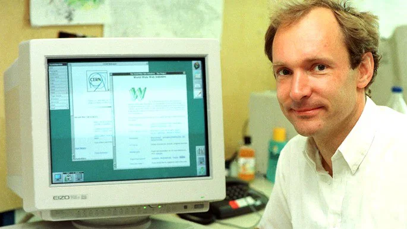
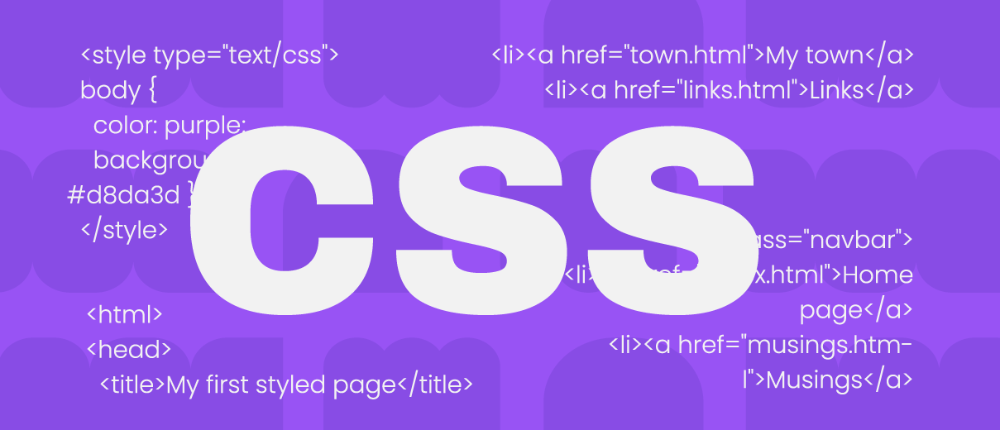

Programação WEB
Origem da internet
Internet e Web são a mesma coisa?
O surgimento da World Wide Web
Como funciona uma página Web
HTML
CSS
JavaScript
Tags, elementos e atributos HTML
Elementos de bloco e elementos de linha
Elementos vazios
Imagens em páginas Webo
Navegadores Web
Desenvolvedor Front-end
A origem da Internet
A internet surgiu durante a Guerra Fria, nos Estados Unidos,na decáda 1960, quando foi criada a ARPANET(Advanced Research Projects Agency Network), que conectava computadores distantes e permitia que eles trocassem dados
entre universidades e centros de pesquisas. A invenção da ARPANET foi muito importante, pois os computadores eram muito grandes, robustos e trabalhavam de maneira isolada. Tanto as universidades,os cientista e os militares, que tiveram um papel fundamental nas pesquisas, tiveram um trabalho fundamental na criação da internet,
pois foram anos e anos de estudos para essa grande inovação. A internet também passou a ser utilizada por universidades e pesquisadores para trocar informações, mensagens, arquivos e trabalhos acadêmicos. Isso facilitou a comunicação entre cientistas de diferentes lugares e permitiu que pesquisas e conhecimentos fossem compartilhados de forma mais rápida.
.jpg)
.jpg)
Internet e Web são a mesma coisa?
O que é a Internet?
Internet e uma rede mundial que conecta computadores,celulares e outros dispoditivos. Permitindo os equipamentos a trocarem informações por TCP/IP.
O que é a World Wide Web?
A World Wide Web é um serviço que funciona sobre a internet. Ela é formada por páginas,sites que são acessados por navegadores, como chorme,firefox e entre outros.
É possível existir Internet sem Web?
Sim, é possivel existir internet sem a Web. Porque usamos a internet para eniviar e-mails, jogar on-line, fazer chamadas. Já não e possivel existir Web sem a internet.
Por que as duas expressões são usadas como sinônimos?
Isso acontece principalmente porque a Web é um dos serviços mais populares e visíveis da Internet. Para muitas pessoas, a principal forma de utilizar a Internet é abrir um navegador e acessar sites.
Assim, no uso cotidiano, tornou-se comum dizer "entrar na Internet" quando, na realidade, muitas vezes estamos dizendo "acessar a Web".
O surgimento da World Wide Web
Quem foi Tim Berners-Lee?
Tim Berners-Lee é um cientista britânico, nascido em londres, em 1955, que estudou física na Universidade de Oxford. Berners-Lee viu que os pesquisadores usavam diferentes computadores e sistemas para armazenar informações, dificultando o compartilhamento de informações entre eles. Para solucionar esse problema , Berners-Lee teve uma ideia de criar um sistema que compartilhasem essas informações por meio de hiperlinks, com isso ele acabou criando o HTML, o HTTP e a URL, em 1990, e tambem criou o primeiro navegador Web.
Onde a Web foi criada?
A Web(World Wide Web) foi criada pela CERN, em Genebra, na Suíça, no final da decáda de 1980 e início da decáda de 1990.A primeira proposta da Web foi apresentada por Berners-Lee em março de 1989, em um documento chamado Information Management: A Proposal. Inicialmente, a proposta tinha como objetivo melhorar o gerenciamento das informações dentro do próprio CERN.
Posteriormente, a ideia foi desenvolvida e transformada em um sistema que poderia ser utilizado muito além do CERN.
Qual o problema ela buscava solucionar?
O principal problema que a Web buscava solucionar era a dificuldade de compartilhar e organizar informações entre diferentes pessoas, computadores e sistemas.
Quando surgiu?
A história da Web pode ser dividida em alguns momentos importantes como: em 1989 quando Tim Berners-Lee apresentou sua proposta ao CERN, sendo considerada um dos primeiros passos para criação da Web.
Já em 1990, Berners-Lee desenvolveu os principais componentes necessários para colocar a ideia em funcionamento. Ele criou o primeiro servidor Web, o primeiro navegador e o primeiro site. E em 1991, o primeiro site da Web ficou disponível na Internet. Ele explicava o próprio projeto da World Wide Web e ensinava como utilizar o sistema.
Um momento muito importante também aconteceu em 1993, quando o CERN decidiu tornar a tecnologia da Web disponível gratuitamente, sem cobrar royalties.A partir daí, a Web começou a crescer rapidamente.
Importancia da criação da Web para a Internet.
A criação da Web teve uma importância enorme porque ajudou a tornar a Internet mais acessível para o público em geral. Antes da Web, a Internet já podia ser utilizada para diversas finalidades, como transferência de arquivos, comunicação por e-mail e acesso remoto a computadores. Porém, muitas dessas atividades exigiam conhecimentos técnicos.
A Web mudou essa situação ao oferecer uma forma mais simples de acessar informações. Com um navegador, o usuário podia abrir uma página, clicar em um link e ser levado para outra página relacionada.
Isso criou uma maneira muito mais intuitiva de explorar informações.

Como funciona uma página Web
Uma página Web é um conteúdo que podemos acessar pela Internet usando um navegador, como Chrome, Firefox ou Edge. Quando digitamos o endereço de um site, o navegador pede as informações dessa página para um servidor.
O servidor envia os arquivos necessários, e o navegador interpreta esses arquivos e mostra a página na tela. As páginas são criadas com HTML,CSS e JavaScript,por exemplo em uma página de loja, o HTML cria o nome do produto e o botão de comprar, o CSS pode deixar a página bonita e organizada, e o JavaScript pode fazer o botão funcionar.
De forma simples, uma página Web funciona através da comunicação entre o navegador e o servidor.
HTML
HTML significa HyperText Markup Language, em português significa Linguagem de Marcação de Hipertexto. HTML serve para a criação e organização dos conteúdos de uma página Web, permitindo colocar títuloas,textos,imagens,links e entre outros.
HTML não é considerada uma linguagem de programação, e sim uma linguagem de marcação por causa da utilização de elemntos e tags, que indicam para o navegador como aquele conteúdo deve ser organizado.
O HTML é muito importante na construção de uma página Web porque funciona como a estrutura da página. Podemos compará-lo à estrutura de uma casa: ele define onde ficam os principais elementos.
Alguns exemplos de elementos HTML são h1 para títulos, p para parágrafos, img para imagens e varios outros.

CSS
CSS significa Cascading Style Sheets, que em português significa Folhas de Estilo em Cascata. O CSS é utilizado para definir a aparência de uma página Web.
Ele permite modificar cores, tamanhos, fontes, espaços, posições e outros detalhes visuais dos elementos da página.
A principal diferença entre HTML e CSS é que o HTML cria e organiza o conteúdo, enquanto o CSS cuida da aparência desse conteúdo. Por exemplo, o HTML pode criar um
título e um parágrafo, enquanto o CSS pode definir a cor, o tamanho e o tipo de letra que serão usados.
Com o CSS nós modificamos cores de textos, cores de fundo,tamanhos,tipos de fontes e varias outras coisas.

JavaScript
JavaScript é uma linguagem de programação utilizada para adicionar interatividade e comportamento às páginas Web. Ele permite que a página responda às ações do usuário.
Sua função em uma página Web é fazer com que elementos possam realizar ações.
Por exemplo, o JavaScript pode fazer um botão funcionar, mostrar uma mensagem, validar um formulário, criar animações ou alterar uma informação na página sem precisar recarregá-la.
De forma simples, podemos pensar que o HTML cria a estrutura da página, o CSS cuida da aparência e o JavaScript faz a página ter ações e interações.
Por isso, o JavaScript é muito importante para tornar os sites mais dinâmicos e interativos.

Tags, elementos e atributos HTML
Uma tag HTML é uma marca usada para indicar ao navegador que tipo de conteúdo está sendo criado. As tags ficam entre os sinais < e >. Alguns exemplos são h1, p e img.
Um elemento HTML é uma parte da página Web usada para criar e organizar o conteúdo. Ele normalmente é formado por uma tag de abertura, o conteúdo e uma tag de fechamento(< e >).
Um atributo HTML é uma informação adicional colocada dentro da tag de abertura de um elemento. Ele serve para definir características ou fornecer informações sobre aquele elemento, por exemplo a href- que no caso o href é o atributo. Que ele indica para qual endereço o link deve levar o usuário.
A tag de abertura é usada para indicar o início de um elemento HTML. Ela fica entre os símbolos < e >.
A tag de fechamento indica o final do elemento. Ela é parecida com a tag de abertura, mas possui uma barra / antes do nome.
Elementos de bloco e elementos de linha
Os elementos de bloco normalmente ocupam toda a largura disponível da página e começam em uma nova linha. Isso significa que, quando colocamos dois elementos de bloco um depois do outro, eles geralmente ficam um abaixo do outro. exemplos- h1,P entre outros.
Os elementos de linha ou inline ocupam apenas o espaço necessário para o seu conteúdo e não começam uma nova linha. Por isso, vários elementos de linha ou inline podem aparecer na mesma linha. por exemplo= strong,img e entre outros.
A principal diferença é a forma como os elementos ocupam espaço na página.
Um elemento de bloco normalmente começa em uma nova linha e ocupa toda a largura disponível.
Um elemento inline permanece na mesma linha e ocupa apenas o espaço necessário para seu conteúdo.
Elementos Vazios
Os elementos vazios são elementos HTML que não possuem conteúdo dentro deles e, por isso, não precisam de uma tag de fechamento.
Alguns elementos HTML não possuem tag de fechamento porque não precisam conter outro conteúdo dentro deles. Eles apenas realizam uma função específica na página.
Por exemplo br que é usado para fazer uma quebra de linha,ele não precisa de uma tag de fechamento, pois sua função é simplesmente criar uma quebra de linha.
Alguns elementos que ja foram ensinados em sala de aula são br, hr, img entre outros.
Imagens em páginas Web
As imagens são muito utilizadas em páginas HTML para deixar o conteúdo mais visual, apresentar informações e tornar a página mais interessante para o usuário.
Para colocar uma imagem em uma página HTML, usamos o elemento img. Esse elemento é considerado um elemento vazio, por isso não possui uma tag de fechamento.
O atributo src é utilizado para indicar onde está o arquivo da imagem.
As imagens são importantes em uma página Web porque podem ilustrar informações, apresentar produtos, mostrar exemplos e tornar o conteúdo mais fácil de entender e visualmente agradável.
Navegadores Web
Um navegador Web é um programa usado para acessar e visualizar páginas da Internet. Ele permite que o usuário entre em sites, veja textos, imagens, vídeos, links e outros conteúdos.
Alguns navegadores conhecidos são Google Chrome, Mozilla Firefox, Microsoft Edge, Safari e Opera.
Quando uma pessoa acessa uma página, o navegador recebe os arquivos do site, como os arquivos HTML, CSS e JavaScript.
Ele interpreta esses arquivos e transforma os códigos em uma página que o usuário consegue visualizar e utilizar.
O HTML é muito importante nesse processo porque é responsável por organizar a estrutura e o conteúdo da página. O navegador interpreta as tags HTML, como h1, p e img e apresenta o resultado na tela.
Assim, podemos dizer que o navegador funciona como um “intérprete” da página Web, recebendo os códigos e apresentando o resultado de uma forma que o usuário consegue entender e utilizar.
Desenvolvedor Front-end
O que faz um profissional de desenvolvimento Front-end?
O desenvolvedor Front-end é o profissional responsável por criar a parte de um site ou aplicativo que o usuário vê e utiliza diretamente. Ele transforma um projeto ou uma ideia em uma página que funciona no navegador.
Esse profissional trabalha principalmente com HTML, CSS e JavaScript. O HTML é usado para organizar a estrutura da página, o CSS para definir sua aparência e o JavaScript para criar interações e funcionalidades.
Por exemplo, em um site de uma loja, o desenvolvedor Front-end pode criar a página dos produtos, organizar as imagens e informações, estilizar os botões e fazer com que ações como clicar em "Comprar" ou preencher um formulário funcionem corretamente.
Principais atividades
Entre as principais atividades de um desenvolvedor Front-end estão criar páginas Web, organizar conteúdos, desenvolver menus e botões, criar formulários, adicionar interações e corrigir erros. Ele também verifica se o site funciona corretamente em computadores e celulares e se adapta a diferentes tamanhos de tela.
Tecnologias Utilizadas
As principais tecnologias utilizadas são HTML, CSS e JavaScript. O HTML é usado para criar a estrutura da página, o CSS para cuidar da aparência e o JavaScript para adicionar funcionalidades e interações.
Com o tempo, o profissional também pode aprender outras ferramentas e tecnologias, como React, Vue, Angular, Git e TypeScript.
Relação da interface com usuário
O Front-end está diretamente relacionado à interface que aparece para o usuário. Tudo aquilo que uma pessoa consegue visualizar ou utilizar em um site, como textos, imagens, menus, botões, formulários e animações, faz parte da área de atuação do Front-end.
Por exemplo, quando uma pessoa entra em uma loja virtual e vê os produtos, clica em um botão de compra ou preenche seus dados em um formulário, existe um trabalho de Front-end por trás dessa interface.
Conhecimentos que são necessários para começar
Para começar na área, o estudante deve aprender primeiro os conceitos básicos de HTML, CSS e JavaScript. Também é importante entender como funcionam os navegadores, as páginas Web e a comunicação entre cliente e servidor.
Além da parte técnica, é importante desenvolver conhecimentos sobre responsividade, para que as páginas funcionem bem em diferentes dispositivos, e noções de acessibilidade, para que possam ser utilizadas por diferentes pessoas.
Clique aqui para voltar ao início da página